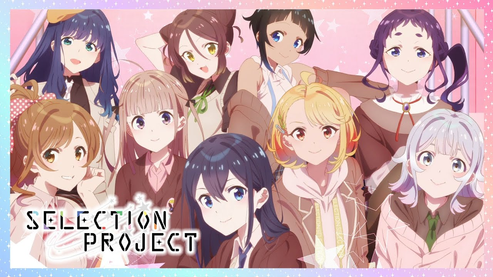

𝘼𝙉𝙄𝙈𝙀 𝙁𝘼𝙉 𝙎𝙄𝙏𝙀
Anime
Grupo
Contacto

Falleció el director de
la adaptación al anime de Edens Zero
Japón: TV Tokyo emitió Blade mientras
los demás cubrían la boda de la
Princesa Mako
Así celebró el Halloween la industria
del anime
Funimation anuncia los doblajes de
Noragami, Super Cub y más series
Reseña | Komi-san Can’t
Communicate – Capítulo 3

 Falleció el director de
Falleció el director de  Japón: TV Tokyo emitió Blade mientras
Japón: TV Tokyo emitió Blade mientras  Así celebró el Halloween la industria
Así celebró el Halloween la industria Funimation anuncia los doblajes de
Funimation anuncia los doblajes de Reseña | Komi-san Can’t
Reseña | Komi-san Can’t